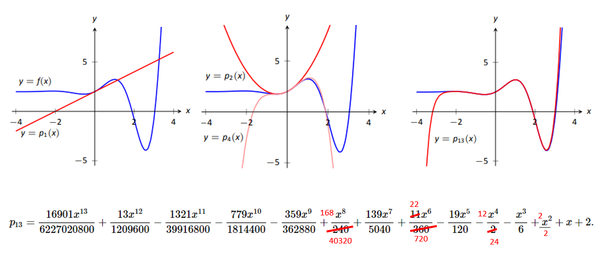

Topic 10 Lagrange Interpolation
In many computational applications, one must approximate an intractable real-valued function \(f(x)\) with a computationally tractable function \(\hat{f}(x)\). Broadly speaking, there are two types of function approximation problems that arise often in real-world applications: interpolation and functional equation problems.
Starting from this note, we will focus on numerical approximation problems via interpolation. We have noticed that a given continuous function can be approximated by a polynomial function. The following figure shows that \(y = e^x\) can be approximated by Taylor polynomials reasonably well.

where
\[ P_n(x) = 1 + x + \frac{x^2}{2!} + \frac{x^3}{3!} + \cdots + \frac{x^n}{n!}. \]
Note that the Taylor expansion of \(y = e^x\) is given by
\[ y = e^x = P_n(x) + R_n(x) \]
With
\[ R_n(x) = \frac{e^{\xi}x^{n+1}}{(n+1)!} \ \ \text{ for some } \xi \in (0, x). \]
It is not surprising that, as \(n\) gets bigger, \(P_n(x)\) gets closer to \(y = e^x\). The next figure gives the curve of a function that is more complex than \(e^x\). We can see a similar pattern as seen in the above figure.

The approximation error is summarized in the following Theorem (will not prove it in this class)
Theorem. Let \(f(x)\) be a real-valued function that has continuous derives up to order \(n+1\), Then the remainder of the Taylor expansion at \(x = a\) (i.e., approximation error) can be expressed in the following integral form \[ R_n^a[f(x)] = \int_a^x \frac{f^{(n+1)}(t)}{n!}(t-a)^n dt. \]
In the above two examples, the underlying function \(f(x)\) was expanded at \(x = 0\) (i.e., Maclaurin expansion). In general, Taylor expansion (approximation) uses values of the function and its derivatives: \(f(a), f^\prime(a), f^{(2)}(a), \cdots, f^{(n)}\) and \(f^{(n+1)(\xi)}\) where \(\xi \in (a, x)\).
We can also consider Taylor expansion as a linear combination of basis functions \(\{1, x, x^2, x^3, \cdots, x^n, \cdots \}\).
There are several obvious disadvantages of the Taylor polynomial approximation:
\(y = f(x)\) must be explicitly given and is \(n\)-th order differentiable. That is, to get an n-th degree Taylor polynomial, we need to assume \(f(x)\) to have an n-th order derivative.
The approximation is very well in the neighborhood of \(x= a\) at which the function \(y = f(x)\) is expanded (via Taylor expansion) but is poor far away from the neighborhood.
A natural question: whether we can sample a set of points on the curve of \(y = f(x)\) and then find a lower degree (than Taylor) polynomial for approximating \(y = f(x)\) such that \(P_n(x_i) = f(x_i)\).
The answer to the question is YES. Several methods using this idea will be introduced in the next few notes.
10.1 Concepts of Interpolation Method
A function is said to interpolate a set of data points if it passes through those points.
Definition: The function \(y = f(x)\) interpolates the data points \(\{(x_1, y_1), (x_2, y_2), \cdots, (x_n, x_n)\}\) if \(y_i = P_n(x_i)\) for each \(1 \le i \le n\).
Since \(f(x)\) is a function; \(x_i\)’s must be all distinct in order for a function to pass through them.
10.1.1 Data-fitting / Interpolation:
For the following given points samples from an unknown function \(f(x)\):
| \(x\) | \(x_0\) | \(x_1\) | \(x_2\) | \(\cdots\) | \(x_n\) |
|---|---|---|---|---|---|
| \(y\) | \(y_0\) | \(y_1\) | \(y_2\) | \(\cdots\) | \(y_n\) |
and we try to find a polynomial \(P_n(x)\) of degree \(\le n\) for which,
\[ P_n(x_i) = y_i, \ \ \text{ for } \ \ 0 \le i \le n. \] such a polynomial is said to interpolate the data (data fitting). This type of question is very common in almost areas that produce data.
Existence of Polynomial Interpolation: if \(\{x_0, x_1, x_2, \cdots, x_n \}\) are distinct real numbers, then for arbitrary values \(\{y_0, y_1, y_2, \cdots, y_n \}\) there is a unique polynomial \(P_n(x)\) of degree \(\le n\) such that
\[ P_n(x_i) = y_i, \ \ \text{ for } 0 \le i \le n. \]
Proof. For any polynomial \(P_n(x)\) of degree \(\le n\), we have the following form :
\[ P_n(x) = a_0 + a_1x + a_2 x^2 + \cdots + a_n x^n. \]
To determine the polynomial \(P_n(x)\) is to find the coefficient \(a_i\)’s. We will use the interpolation condition \(P_n(x_i) = y_i, \ \ \text{ for } 0 \le i \le n\).

Note that \(\{a_0, a_1, a_2, \cdots, a_n \}\), are unknown. We rewrite it in the following matrix form
Since the coefficient matrix is a Vandermonde matrix, it is nonsingular if and only if \(\{x_0, x_1, x_2, \cdots, x_n \}\) are distinct. This imply that the system exists a unique solution \((a_0, a_1, a_2, \cdots, a_n)^T\) if and only if \(\{x_0, x_1, x_2, \cdots, x_n \}\) are distinct since the determinant of that matrix is
\[ \prod_{1 \le i < j \le n}(x_i-x_j) \]
Hence, there exists a unique polynomial \(P_n(x)\) of degree \(\le n\) if \(\{x_0, x_1, x_2, \cdots, x_n \}\) are distinct.
10.1.2 Functional Equation (Curve Approximation)
Another type of interpolation problem is formulated as follows: given a set of \(\{ x_0, x_1, x_3, \cdots, x_n\}\) and a continuous function \(f(x)\), find a polynomial \(P_n(x)\) of degree less than or equal to n such that \(P_n(x_i) = f(x_i)\) for \(0 \le i \le n\).
The Newton interpolation is one type of this problems. We will introduce this method in a subsequent note.
10.2 The Lagrange Interpolation
The basic idea of Lagrange interpolation is approximate a function by using a linear combination of Lagrange basis polynomials defined based on a given set of distinct points \(\{(x_0, y_0), (x_1, y_1), (x_2, y_2), \cdots, (x_n, y_n)\}\) sampled from a curve of a function \(f(x)\) with an unknown analytic expression. The given points are called interpolation nodes.
Next, we use several special interpolations to illustrate the construction of Lagrange basis polynomials.
10.2.1 Linear Lagrange Interpolation
Assume that we are given two distinct points \(\{(x_0, y_0), (x_1, y_1)\}\). The objective is to find an interpolation “polynomial” that passes through the two points. Intuitively, we use the following two-point form
\[ y = \frac{y_1 - y_0}{x_1 - x_0}(x - x_0) + y_0 \] The above function is linear (degree 1 polynomial). We use
\[ p_1(x) = \frac{y_1 - y_0}{x - x_0}(x - x_0) + y_0. \] Next, we re-express the above degree one polynomial in the following
\[ p_1(x) = y_1\frac{x-x_0}{x_1-x_0} + y_0\left(1-\frac{x-x_0}{x_1-x_0} \right) = y_1\frac{x-x_0}{x_1-x_0} + y_0\frac{x-x_1}{x_0-x_1} \]
We denote
\[ L_0(x) = \frac{x-x_1}{x_0-x_1} \ \ \text{ and } \ \ L_1(x) = \frac{x-x_0}{x_1-x_0} . \]
\(L_0(x)\) and \(L_1(x)\) are both degree-one polynomials. They are called Lagrange Basis Polynomials with degree 1.
Observations of Lagrange Basis Polynomials: For \(i, j = 0, 1\),
\[ L_i(x_j) = \begin{cases} 1 & i = j \\ 0 & i \ne j. \end{cases} \]
The degree-one interpolation polynomial is expressed as \(p_1(x) = y_0 L_0(x) + y_1 L_1(x)\). The following figure illustrates how the interpolated polynomial is expressed as the linear combination of the Lagrange Basis Polynomials.

We can check that \(p_1(x_0) = y_0\) and \(p_1(x_1) = y_1.\).
10.2.2 Quadratic Lagrange Interpolation
Quadratic Lagrange interpolation assumes that three distinct points were sampled from the curve.
| \(x\) | \(x_0\) | \(x_1\) | \(x_2\) |
|---|---|---|---|
| \(y\) | \(y_0\) | \(y_1\) | \(y_2\) |
The objective is to find a polynomial \(p_2(x)\) of degree \(\le 2\) such that
\[ p_2(x_i) = y_i, \ \ \text{ for } i = 1, 2, 3. \]
we construct the basis \(L_0(x), L_1(x), L_2(x)\) such that
\[ L_i(x_j) = \begin{cases} 1 & i = j \\ 0 & i \ne j. \end{cases} \]
We only construct the basis function \(L_0(x)\) associated with the point \(x_0\). Since \(x_1\) and \(x_2\) are zeros of \(L_0(x)\), it should have the following form
\[ L_0(x) = c(x-x_1)(x-x_2). \] Since \(L_0(x_0) = 1\), which implies that
\[ c = \frac{1}{(x_0-x_1)(x_0-x_2)} \]
Therefore,
\[ L_0 = \frac{(x-x_1)(x-x_2)}{(x_0-x_1)(x_0-x_2)} \]
Similarly, we can construct \(L_1(x)\) and \(L_2(x)\) in the following
\[ L_1(x) = \frac{(x-x_0)(x-x_2)}{(x_1-x_0)(x_1-x_2)} \ \ \text{ and } \ \ L_2(x) = \frac{(x-x_0)(x-x_1)}{(x_2-x_0)(x_2-x_1)} \] Hence the interpolation polynomial is as follows
\[ p_2(x) = y_0L_0(x) + y_1 L_1(x) + y_2 L_2(x) \]

10.2.3 General Lagrange Interpolation
Assume now that we are given the following distinct points
| \(x\) | \(x_0\) | \(x_1\) | \(x_2\) | \(\cdots\) | \(x_n\) |
|---|---|---|---|---|---|
| \(y\) | \(y_0\) | \(y_1\) | \(y_2\) | \(\cdots\) | \(y_n\) |
then a unique polynomial \(p_n(x)\) of degree at most \(n\) exists with
\[ p_n(x) = y_k \] This polynomial is explicitly defined as follows
\[ p_n(x) = y_0L_{n,0}(x) + y_1 L_{n,1}(x) + \cdots + y_nL_{n,n}(x), \]
where
\[ L_{n,k} = \frac{(x-x_0)(x-x_1)\cdots(x-x_{k-1})(x-x_{k+1})\cdots(x_k-x_n)}{(x_k-x_0)(x_k-x_1)\cdots(x_k-x_{k-1})(x_k-x_{k+1})\cdots(x_k-x_n)}. \]
10.3 Lagrange Algorithm and Implementation
The algorithm of the Lagrange interpolation involves two nested iterative processes:
Approximated individual basis polynomial and evaluate it at a given x-value (including the x-coordinates in the approximating notes);
Estimated the set of estimated polynomials with the approximated value of Pn(x).
10.3.1 Pseudo-code
The pseudo-code is given by:
INPUT: x1, x2, ... ,xn
y1, y2, ... ,yn
(or f(x1), f(x2), ..., f(xn))
pred.x
OUTPUT: return Pn(x)
STEP 1: set initial values
Pn = 0 (initial value of interpolated polynomial)
LP = 1 (vector with all 1s)
Step 2: FOR i = 1, 2, ..., n. DO
STEP 3: FOR j = 1, 2, ..., n. DO
IF i != j DO:
LP = LP*(pred.x-xj)/(xi-xj)
ENDIF
ENDFOR
STEP 4 Pn = LP*yi + Pn
ENDFOR
STEP 5: OUTPUT Pn 10.3.2 R Function with Scalar Input
The next function takes only a single x value and returns the value of the approximated polynomial at the provided x value.
#######################################################
## Lagrange Interpolation
#######################################################
LagrangeInterpolation =function(
pred.x, # scalar x for eval Pn()
fn = NULL, # input function or
yvec = NULL, # input y-coordinates
xvec # input x-coordinates
){
#
if(length(yvec) == 0) yvec = fn(xvec) #
n = length(xvec) # input x-coordinates
Pn = 0
for (i in 1:n){
LP = 1
for (j in (1:n)[-i]){
LP = LP * (pred.x - xvec[j])/(xvec[i] - xvec[j])
}
Pn = Pn + LP * yvec[i]
}
Pn
}
Example 1: Find a Lagrange polynomial to approximate the function \(f(x) = e^x\cos(3x)\) and estimate the value of \(f(x)\) at \(x = 0.5\) and \(0.3\) respectively.
Solution: We use the above R function to estimate \(f(x)\) at \(x = 0.5\) and \(0.3\). We also print out the true values \(f(x)\) at \(x = 0.5\) and \(0.3\) for comparison.
fn=function(x) exp(x)*cos(3*x)
approx.val0.3 = LagrangeInterpolation(fn=fn, xvec=c(0, 0.3, 0.6), pred.x = 0.3)
approx.val0.5 = LagrangeInterpolation(fn=fn, xvec=c(0, 0.3, 0.6), pred.x = 0.5)
true.val = fn(c(0.3,0.5))
pander(cbind(approx.val0.3 = approx.val0.3, true.val0.3 = true.val[1],
approx.val0.5 = approx.val0.5, true.val0.5 = true.val[2]))| approx.val0.3 | true.val0.3 | approx.val0.5 | true.val0.5 |
|---|---|---|---|
| 0.8391 | 0.8391 | 0.1251 | 0.1166 |
10.3.3 R Function with Vector Input
#######################################################
## Lagrange Interpolation
#######################################################
Lagrange.Interpolation.Vector =function(
pred.x, # vector x for eval Pn()
fn = NULL, # input function or
yvec = NULL, # input y-coordinates
xvec # input x-coordinates
){
#
if(length(yvec) == 0) yvec = fn(xvec) #
n = length(xvec) # input x-coordinates
m = length(pred.x) # number of input x values
PV = rep(0, m)
for (k in 1:m){
Pn = 0
for (i in 1:n){
LP = 1
for (j in (1:n)[-i]){
LP = LP * (pred.x[k] - xvec[j])/(xvec[i] - xvec[j])
}
Pn = Pn + LP * yvec[i]
}
PV[k] = Pn
}
PV
}fn=function(x) exp(x)*cos(3*x)
approx.value = Lagrange.Interpolation.Vector(fn=fn, xvec=c(0, 0.3, 0.6),
pred.x = c(0.3, 0.5))
true.value = fn(c(0.3, 0.5))
pander(rbind(true.value=true.value, approx.value = approx.value))| true.value | 0.8391 | 0.1166 |
| approx.value | 0.8391 | 0.1251 |
Example 3: Consider Lagrange interpolation approximation of \(f(x) = \frac{1}{1+25x^2}\). The x-nodes used in the approximation are (-1.0, -0.8, -0.6, -0.4, -0.2, 0, 0.2, 0.4, 0.6, 0.8, 1). Plot the curves of \(f(x)\) and \(P_{10}(x)\).
Solution: Based on the given information, we use the above vector-based function to find the P_n(x) and create a sequence of 100 x-values from [-1, 1] that are equally spaced.
fn=function(x) 1/(1 + 25*x^2)
pred.x = seq(-1, 1, length = 100)
xvec = c(-1.0, -0.8, -0.6, -0.4, -0.2, 0, 0.2, 0.4, 0.6, 0.8, 1)
##
approx.value = Lagrange.Interpolation.Vector(fn=fn, xvec=xvec,
pred.x = pred.x)
true.value = fn(pred.x)
plot(pred.x, approx.value, type = "l", col = "red", lwd = 2, lty = 1,
main = "Lagrange Interpolation",
xlab = "",
ylab = "")
lines(pred.x, true.value, lty = 2, lwd = 2, col = "blue")
points(xvec, fn(xvec), pch = 19, col = "purple", cex = 1.2)
legend("top", c("Interpolated Polynomial", "Original Function"),
lwd=rep(2,2), lty=1:2, col = c("red", "blue"), bty="n")10.4 Error Analysis
It is important to understand the nature of the error term when the Lagrange polynomial is used to approximate a continuous function \(f(x)\).
We can see from the expression of Lagrange basis polynomials that the error term of Lagrange interpolation should be similar to that for the Taylor polynomial, except that the factor \((x - x_0)^{n+1}\) is replaced with the product \((x - x_0)(x - x1) \cdots (x - x_n)\). This is expected because interpolation is exact at each of the \(n + 1\) nodes \(x_k\) , where we have error term \(E_n (x_k) = f(x_k) - P_n (x_k) = y_k - y_k = 0\) for \(k = 0, 1, 2, \cdots , n\).
The following theorem specifies the error term of the Lagrange interpolation.
Theorem:Assume that \(f \in C^{n+1}[a, b]\) and that \(x_0, x_1, \cdots , x_n \in [a, b]\) are \(n + 1\) nodes. If \(x \in [a, b]\), then
\[ f(x) = P_n(x) + E_n(x) \]
where \(P_n(x)\) is a polynomial used to approximate \(f(x)\)
\[ f(x) \approx P_n(x) = \sum_{j=0}^n f(x_j)L_j(x) = \sum_{j=0}^n y_jL_j(x) \]
The error term \(E_n(x)\) has the form
\[ E_n(x) = \frac{f^{(n+1)}(c)}{(n+1)!}(x-x_0)(x-x_1)\cdots(x-x_n) \]
for some value \(c = c(x)\) that lies in the interval \([a, b]\).
Proof (I only prove the special case of \(n = 2\), i.e., with 3 interpolation nodes).
For given two nodes \(x_0, x_1 x_2\) and an arbitrarily chosen \(x\), If \(x = x_j (j = 0, 1, 2)\), then error \(E_2(x) = 0\).
We now assume that the arbitrarily chosen value \(x \ne x_j (j =0, 1, 2)\).
Denote \(w(t) = (t - x_0)(t - x_1)(t - x_2)\) and \(\lambda = [f(x) - P_2(x)]/w(x)\). Clearly, \(w(x) \ne 0\). We now define an auxiliary function \(\phi(t) = f(t) - P_2(t) - \lambda w(t)\). Apparently, \(\phi(x) = 0\), \(\phi(x_j) = 0\) (for \(j = 0, 1,2\)), and \(\phi \in C^3[a, b]\).
since \(f\in C^3[a,b]\) and \(\phi (t) = 0\) has four roots, \(x, x_0, x_1, x_2\) in \([a, b]\), there are 3 roots for \(\phi^\prime(t) = 0\) in the open interval \((a, b)\) according to Rolle’s Theorem (special case of the Mean Value Theorem). It follows that there are 2 roots for \(\phi^{\prime\prime}(t) = 0\) in \((a, b\)) and 1 root for \(\phi^{\prime\prime\prime}(t)=0\) in \((a, b)\).
Therefore, \(\exists c = c(x)\) so that \(c(x) \in (a,b)\) and \(\phi^{\prime\prime\prime}(c) = 0\). Note that, \(\phi^{\prime\prime\prime}(t) = f^{\prime\prime\prime}(t) – P_2^{\prime\prime\prime}(t) – \lambda w^{\prime\prime\prime}(t)\).
From the definition of \(P_2(t)\) and \(w(t)\) we know that \(P_2^{\prime\prime\prime}(t) =0\) and \(w^{\prime\prime\prime}(t) = 3!\). Plugging these values into the above equation, we have \(\lambda^{\prime\prime\prime}(t)=f^{\prime\prime\prime}(t) - \lambda 3!\). Consequently, \(f^{\prime\prime\prime}(c) - \lambda 3! =0\). Recall that \(\lambda = [f(x) - P_2(x)]/w(x)\) and \(w(x) = (x - x_0)(x - x_1)(x - x_2)\). We rewrite \(f^{\prime\prime\prime}(c) - \lambda 3! =0\) as follows \[ f^{\prime\prime\prime}(c) - \frac{3![f(x) - P2(x)]}{(x - x0)(x - x1)(x - x2)} = 0 \].
Therefore,
\[ f(x) - P_2(x) = \frac{f^{\prime\prime\prime}(c) }{3!}(x - x_0)(x - x_1)(x - x_2). \] The proof is completed.
The following corollary gives the error bound explicitly.
Corollary: Assume that \(f \in C^{n+1}[a, b]\) and \(|f^{(n+1)}(x)| \le M\) for all \(x \in [a, b]\). Assume also that nodes \(x_0, x_1, \cdots , x_n \in [a, b]\) are equally spaced. If \(x \in [a, b]\). Let \(P_n(x)\) be the unique interpolating polynomial with degree \(\le n\) at the aforementioned equally spaced nodes. If \(x \in [a, b]\), then
\[ |f(x) - P_n(x)|\le \frac{M}{4(n+1)}\left(\frac{b-a}{n} \right)^{n+1}. \]
Remark: If the \((n+1)\)-th derivative is not uniformly bounded, the error bound in the above corollary should be in the following form
\[ |f(x) - P_n(x)|\le \frac{\max_{c\in [a,b]}|f^{(n+1)}(c)|}{4(n+1)}\left(\frac{b-a}{n} \right)^{n+1}. \]
Example 4: In \(f(x) = \cos(x)\), the (n+1)-th derivative is uniformly bounded, one can force the error arbitrarily small by choosing the number of nodes.
Example 5: In \(f(x) = 1/ (1 + x2)\), the derivative cannot be uniformly bounded. Increasing the number of nodes may not decrease the error.